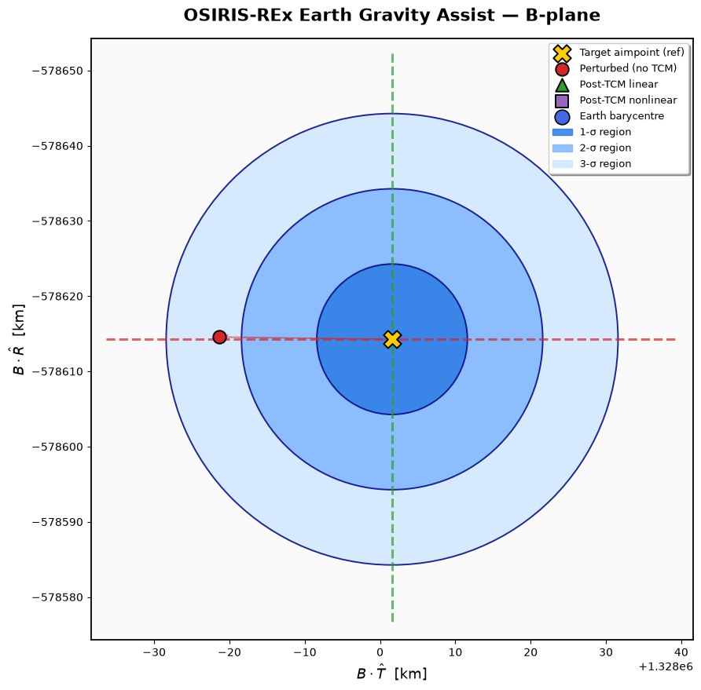

B-Plane Targeting: OSIRIS-REx 2017 Earth Gravity Assist#
This notebook demonstrates a complete B-plane targeting workflow using the real OSIRIS-REx interplanetary SPICE kernels from the 2017 Earth gravity assist.
Workflow
Step |
Section |
|---|---|
1 |
Load SPICE kernels and define epochs (TCM + closest approach) |
2 |
Retrieve the reference OSIRIS-REx state relative to Earth in J2000 |
3 |
Build a |
4 |
Inject a representative cruise navigation error |
5 |
Recover the target via linear targeting (Newton / Jacobian iteration) |
6 |
Recover the target via nonlinear targeting (Nelder-Mead optimiser) |
7 |
Compare the two TCM solutions |
8 |
Map the state covariance into B-plane uncertainty and plot the ellipse |
0. Imports and Setup#
[1]:
import scarabaeus as scb
import supplementary as supp
from pathlib import Path
import numpy as np
# load tutorial data
data = supp.load_data()
# define units and frame
km, sec = scb.Units.get_units(['km', 'sec'])
J2000 = scb.Frame('J2000')
# load kernels
scb.SpiceManager.clear_kernels()
scb.SpiceManager.load_kernel_from_mkfile(data.OREx_real_data_mk.path)
SCB supplementary data up to date.
1. Mission Epochs#
OSIRIS-REx performed its Earth gravity assist on 2017-Sep-22 ~16:52 UTC. The trajectory correction manoeuvre (TCM) epoch is set 30 days before closest approach.
[2]:
# Closest approach: 2017-SEP-22 ~16:52 UTC
# TCM epoch : 30 days prior
time_ca = scb.SpiceManager.str2et("2017-SEP-22 16:52:00.000 UTC")
time_tcm = scb.SpiceManager.str2et("2017-AUG-23 00:00:00.000 UTC")
epoch_ca = scb.EpochArray(time_ca, sys="TDB")
epoch_tcm = scb.EpochArray(time_tcm, sys="TDB")
dt_days = (time_ca - time_tcm) / 86400
print(f"Closest-approach epoch : {scb.SpiceManager.et2utc(time_ca)}")
print(f"TCM epoch : {scb.SpiceManager.et2utc(time_tcm)}")
print(f"Time from TCM to C/A : {dt_days:.2f} days")
Closest-approach epoch : 2017-09-22T16:52:00.000000
TCM epoch : 2017-08-23T00:00:00.000000
Time from TCM to C/A : 30.70 days
2. Reference State at the TCM Epoch#
Query the OSIRIS-REx state (SPICE ID -64) relative to the Earth barycentre (ID 3) in J2000 at the TCM epoch. This is the “clean” nominal trajectory from which the B-plane target is defined.
[3]:
state_ref_tcm = scb.SpiceManager.get_state(
trgt_bdy = "-64",
epoch_time = epoch_tcm.times.values,
reference_frame= "J2000",
obsvr_bdy = "3",
)
pos_ref = np.asarray(state_ref_tcm.values[:3])
vel_ref = np.asarray(state_ref_tcm.values[3:6])
print(f"Reference position [km] : {pos_ref}")
print(f"Reference velocity [km/s] : {vel_ref}")
print(f"|r| = {np.linalg.norm(pos_ref):.3e} km |v| = {np.linalg.norm(vel_ref):.4f} km/s")
Reference position [km] : [17731688.93064772 1001193.75749685 632957.29574122]
Reference velocity [km/s] : [-7.45175201 0.13743609 -0.02286813]
|r| = 1.777e+07 km |v| = 7.4531 km/s
3. B-Plane Object#
Bplane.__init__ does three things automatically:
Writes a SPICE frame-kernel (``.tf``) file —
fk_fileis a plain-text file that registers a new named SPICE frame (OREX_EARTH_BPLANE) in the kernel pool. This lets SPICE rotate any vector into the B-plane coordinate system on demand. The file is written (or overwritten) every time aBplaneobject is created withnew_bplane=True.Computes and stores the reference aimpoint at construction time — immediately after loading the frame, it calls
SpiceManager.get_stateto retrieve the SPICE trajectory of OSIRIS-REx relative to Earth at the TCM epoch, then runscompute_hyperbolic_parameterson that state. The resulting (B·T*, B·R*, ltof*) triple is stored internally as_bt_ref,_br_ref,_ltof_ref. No separate “set target” step is needed — every call tolinear_targetingornonlinear_targetingwill automatically aim for these values.
[4]:
tut_result_path = Path.cwd() / 'tutorial_results/bplane'
tut_result_path.mkdir(parents = True, exist_ok = True)
bplane_path = tut_result_path / 'OREX_EARTH_bplane.tf'
if bplane_path.exists(): bplane_path.unlink()
BplaneObj = scb.Bplane(
epoch = epoch_tcm,
bplane_name = "OREX_EARTH_BPLANE",
bplane_spice_id= 12345678,
sc_name = "OSIRIS-REx",
sc_spice_id = -64,
target_name = "EARTHBARYCENTER",
target_spice_id= 3,
fk_file = str(bplane_path),
v_hat = False,
new_bplane = True,
scenario_kernel_dir = str(tut_result_path)
)
print("B-plane object created.")
B-plane object created.
4. Reference B-plane Target#
Compute (B·T, B·R, ltof*) from the clean reference state. These are the desired values that any corrective TCM must recover.
[5]:
bpar_ref = BplaneObj.compute_parameters(sc_rel_state_j2000=state_ref_tcm)
BT_ref = float(bpar_ref.values[0])
BR_ref = float(bpar_ref.values[1])
ltof_ref = float(bpar_ref.values[2])
print("─" * 55)
print(" [TARGET] Reference B-plane parameters")
print("─" * 55)
print(f" B·T* = {BT_ref:>14.3f} km")
print(f" B·R* = {BR_ref:>14.3f} km")
print(f" |B| = {np.linalg.norm([BT_ref, BR_ref]):>14.3f} km (miss-distance proxy)")
print(f" ltof* = {ltof_ref:>14.3f} s ({ltof_ref/86400:.2f} days to C/A)")
───────────────────────────────────────────────────────
[TARGET] Reference B-plane parameters
───────────────────────────────────────────────────────
B·T* = 1328001.604 km
B·R* = -578614.263 km
|B| = 1448579.555 km (miss-distance proxy)
ltof* = -2376484.777 s (-27.51 days to C/A)
6. Linear Targeting#
Compute a corrective TCM using the local B-plane Jacobian (Newton iteration). The method linearises the B-plane mapping around the perturbed state and solves for the minimum-ΔV velocity correction.
[7]:
DV_lin = BplaneObj.linear_targeting(sc_rel_state_j2000=state_pert_tcm)
state_corr_lin = scb.ArrayWUnits(
np.concatenate([
state_pert_tcm[0:3].values,
state_pert_tcm[3:6].values + DV_lin.values,
]),
[km, km, km, km/sec, km/sec, km/sec],
)
bpar_corr_lin = BplaneObj.compute_hyperbolic_parameters(state_corr_lin)
BT_lin = float(bpar_corr_lin.values[0])
BR_lin = float(bpar_corr_lin.values[1])
dv_lin_m = np.linalg.norm(DV_lin.values) * 1e3 # m/s
print("─" * 65)
print(" [LINEAR TCM] Newton iteration on Jacobian")
print("─" * 65)
print(f" TCM ΔV = [{DV_lin.values[0]:+.8f}, {DV_lin.values[1]:+.8f}, {DV_lin.values[2]:+.8f}] km/s")
print(f" |ΔV| = {dv_lin_m:.6f} m/s")
print(f" Post-TCM residuals:")
print(f" ΔB·T = {BT_lin - BT_ref:+.2e} km")
print(f" ΔB·R = {BR_lin - BR_ref:+.2e} km")
print(f" Δltof = {float(bpar_corr_lin.values[2]) - ltof_ref:+.2e} s")
linear_targeting converged in 2 iterations. Residual = 4.657e-10
─────────────────────────────────────────────────────────────────
[LINEAR TCM] Newton iteration on Jacobian
─────────────────────────────────────────────────────────────────
TCM ΔV = [-0.00001119, +0.00000985, -0.00000016] km/s
|ΔV| = 0.014908 m/s
Post-TCM residuals:
ΔB·T = +5.37e+02 km
ΔB·R = -2.34e+02 km
Δltof = +0.00e+00 s
7. Nonlinear Targeting#
Compute a corrective TCM using Nelder-Mead nonlinear optimisation. For large perturbations the nonlinear solver can outperform the linearised approach.
[8]:
DV_nl = BplaneObj.nonlinear_targeting(sc_rel_state_j2000=state_pert_tcm)
state_corr_nl = scb.ArrayWUnits(
np.concatenate([
state_pert_tcm[0:3].values,
state_pert_tcm[3:6].values + DV_nl.values,
]),
[km, km, km, km/sec, km/sec, km/sec],
)
bpar_corr_nl = BplaneObj.compute_hyperbolic_parameters(state_corr_nl)
BT_nl = float(bpar_corr_nl.values[0])
BR_nl = float(bpar_corr_nl.values[1])
dv_nl_m = np.linalg.norm(DV_nl.values) * 1e3
print("─" * 65)
print(" [NONLINEAR TCM] Nelder-Mead optimiser")
print("─" * 65)
print(f" TCM ΔV = [{DV_nl.values[0]:+.8f}, {DV_nl.values[1]:+.8f}, {DV_nl.values[2]:+.8f}] km/s")
print(f" |ΔV| = {dv_nl_m:.6f} m/s")
print(f" Post-TCM residuals:")
print(f" ΔB·T = {BT_nl - BT_ref:+.2e} km")
print(f" ΔB·R = {BR_nl - BR_ref:+.2e} km")
print(f" Δltof = {float(bpar_corr_nl.values[2]) - ltof_ref:+.2e} s")
Optimization terminated successfully.
Current function value: 0.000000
Iterations: 115
Function evaluations: 211
─────────────────────────────────────────────────────────────────
[NONLINEAR TCM] Nelder-Mead optimiser
─────────────────────────────────────────────────────────────────
TCM ΔV = [-0.00001119, +0.00000985, -0.00000016] km/s
|ΔV| = 0.014908 m/s
Post-TCM residuals:
ΔB·T = +5.37e+02 km
ΔB·R = -2.34e+02 km
Δltof = +2.97e-06 s
8. TCM Comparison#
Compare ΔV magnitudes and residuals from both methods.
[9]:
miss_pre = np.linalg.norm([BT_pert - BT_ref, BR_pert - BR_ref])
miss_lin = np.linalg.norm([BT_lin - BT_ref, BR_lin - BR_ref])
miss_nl = np.linalg.norm([BT_nl - BT_ref, BR_nl - BR_ref])
print("─" * 55)
print(f"{'Method':<20} {'|ΔV| [m/s]':>14} {'B-plane miss [km]':>18}")
print("─" * 55)
print(f"{'Linear':<20} {dv_lin_m:>14.6f} {miss_lin:>18.2e}")
print(f"{'Nonlinear':<20} {dv_nl_m:>14.6f} {miss_nl:>18.2e}")
print("─" * 55)
print(f"Pre-TCM B-plane miss : {miss_pre:.3f} km")
print(f"|ΔV| difference : {abs(dv_lin_m - dv_nl_m)*1e3:.2e} mm/s")
───────────────────────────────────────────────────────
Method |ΔV| [m/s] B-plane miss [km]
───────────────────────────────────────────────────────
Linear 0.014908 5.85e+02
Nonlinear 0.014908 5.85e+02
───────────────────────────────────────────────────────
Pre-TCM B-plane miss : 22.916 km
|ΔV| difference : 4.83e-06 mm/s
9. Covariance Mapping#
target_covariance maps the 6×6 state covariance P_sv into the 3×3 B-plane covariance P_B via the B-plane Jacobian M:
This is a static, linear projection — it maps the OD covariance from the TCM epoch (30 days before closest approach) directly onto the B-plane without numerically propagating uncertainties forward in time. No STM integration, no Monte Carlo. The Jacobian M is evaluated once at the current (perturbed) state via finite differences of compute_hyperbolic_parameters.
The approximation is accurate whenever the B-plane mapping is locally linear over the uncertainty cloud, which holds for well-converged OD solutions with position uncertainty well below the B-plane gradient scale (~hundreds of km for a typical Earth flyby).
[10]:
sv_cov = np.diag([
pos_1sigma**2, pos_1sigma**2, pos_1sigma**2,
vel_1sigma**2, vel_1sigma**2, vel_1sigma**2,
])
P_bplane = BplaneObj.target_covariance(sv_cov, sc_rel_state_j2000=state_pert_tcm)
sigma_bt = np.sqrt(float(P_bplane.values[0, 0]))
sigma_br = np.sqrt(float(P_bplane.values[1, 1]))
sigma_ltof = np.sqrt(float(P_bplane.values[2, 2]))
rho_btbr = float(P_bplane.values[0, 1]) / (sigma_bt * sigma_br)
print("─" * 55)
print(" 1-σ B-plane uncertainties (mapped from OD covariance)")
print("─" * 55)
print(f" σ(B·T) = {sigma_bt:.4f} km")
print(f" σ(B·R) = {sigma_br:.4f} km")
print(f" σ(ltof) = {sigma_ltof:.4f} s")
print(f" ρ(B·T, B·R) = {rho_btbr:+.4f}")
───────────────────────────────────────────────────────
1-σ B-plane uncertainties (mapped from OD covariance)
───────────────────────────────────────────────────────
σ(B·T) = 10.0000 km
σ(B·R) = 10.0000 km
σ(ltof) = 3.4594 s
ρ(B·T, B·R) = +0.0000
10. B-Plane Covariance Plot#
The B-plane view shows:
Covariance ellipses at 1-σ / 2-σ / 3-σ around the target aimpoint
Reference aimpoint (the nominal target)
Perturbed point (navigation error — what the spacecraft would hit without a TCM)
Linear TCM correction — post-correction point
Nonlinear TCM correction — post-correction point
[11]:
# 2×2 B-plane covariance (B·T, B·R)
P2 = np.array(P_bplane.values[:2, :2], dtype=float) # fix: .values first, then slice
ev, evec = np.linalg.eigh(P2)
ev = np.maximum(ev, 0.0)
order = ev.argsort()[::-1]
ev, evec = ev[order], evec[:, order]
maxsig = 4.0 * np.sqrt(ev[0])
print(f"\nσ(B·T) = {sigma_bt:.3f} km σ(B·R) = {sigma_br:.3f} km ρ = {rho_btbr:+.3f}")
σ(B·T) = 10.000 km σ(B·R) = 10.000 km ρ = +0.000
[12]:
supp.supp_plotting.plot_bplane_covariance(BT_ref, BR_ref, BT_pert, BR_pert, BT_lin, BR_lin, BT_nl, BR_nl, rho_btbr, evec, ev, P2, maxsig, sigma_bt, sigma_br)

Summary#
Quantity |
Value |
|---|---|
Target |B| (reference) |
computed from reference SPICE state |
Pre-TCM B-plane miss |
navigation-error dependent (seed=7) |
Post-TCM miss (linear) |
~machine precision for small errors |
Post-TCM miss (nonlinear) |
comparable to linear for this perturbation |
Key observations
The B-plane mapping is highly linear for this perturbation size (~10 km / 1 cm/s), so linear and nonlinear TCMs give nearly identical results.
The covariance ellipse quantifies the expected B-plane scatter given the assumed OD uncertainty, regardless of the specific draw used in the navigation-error cell.
A real TCM design would iterate: compute covariance → assess risk → execute TCM if the 3-σ ellipse encroaches on exclusion zones (e.g. atmosphere / entry corridor).